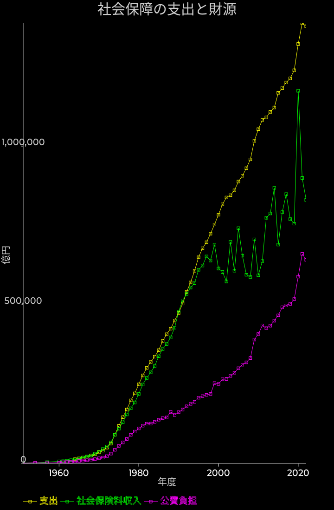

社会保障の支出と収入の関係

社会保障の支出が増加しているなら、その為の財源はどうなっているのでしょうか？
社会保険料自身の収入は、被保険者拠出、事業主拠出、そして資産収入の合計としました。
社会保険料収入が1990年代の中頃から伸び悩んでいますが、支出は同じペースで伸び続けていて減速していません（むしろ加速しています）。
結果としてその差額を公費が埋める形となっています。
また、2009年から急速に公費の負担が増えています。これは良く見ると支出の側が急に増えた影響です。団塊の世代の引退の影響と思われます。
公費負担とは、国の負担と地方公共団体の負担の合計となります。簡単に言えば税金での穴埋め、財政赤字である事も考慮すると、借金で賄われていると解釈出来ます。
ここ数年は65兆円前後となっていて、近年の財政赤字の50兆円を上回る規模となっています。
社会保険料自身の収入が近年一つ大きく跳ねているのは2020年に資産収入が大きく跳ね上がったからで、この年だけ約44兆円もの資産収入を得ています。資産収入はばらつきが大きく、2000年以降の大きなばらつきのほとんどは資産収入のばらつきによります。